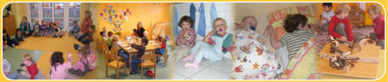
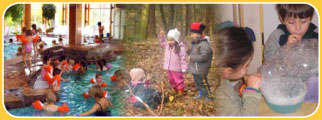
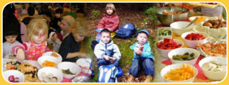

Unser Alltag: So verläuft ein Tag in unserem Kindergarten:
6 - 8:30 Uhr |
Die Frühdienstkinder treffen bei den Rennmäusen ein. Bis 8.30 Uhr steht freies Spiel in der Sammelgruppe auf dem Programm. |
8:30 – 9 Uhr |
Bringezeit für alle anderen Kindern. Für die Eltern und Erzieherinnen besteht sowohl bei der Bringe- als auch bei der Abholzeit die Möglichkeit sich untereinander auszutauschen. Für Kinder, die in der KiTa essen möchten, besteht bis 9 Uhr die Möglichkeit für ein gemeinsames Frühstück. Danach werden Zähne geputzt. |
9 -12 Uhr |
Um neun Uhr, wenn auch das letzte Kind angekommen ist, beginnt der gemeinsame Tag mit einem Morgenkreis: wir begrüßen uns erst einmal alle, singen ein Lied und besprechen alle wichtigen Dinge. Die Erzieherinnen stellen vor, welche Beschäftigungen heute angeboten werden. Die Kinder können sich aussuchen, woran sie teilnehmen möchten. Neben den spezifischen Gruppenaktivitäten finden auch besondere gruppenübergreifende Aktionen statt. So haben die Kinder die Möglichkeit, auch außerhalb ihrer Gruppe Kontakte zu knüpfen und Freundschaften zu schließen.
Für den kleinen Hunger stehen den Kindern Knabberobst und Gemüse sowie jederzeit Mineralwasser und ungezuckerte Früchtetees zur Verfügung. |
Um 12 Uhr |
gibt es das Mittagessen, das von unseren Erzieherinnen gemeinsam mit den Kindern eingenommen wird. Ausgewogene Ernährung, Tischmanieren und gemütliches Beisammensein stehen an erster Stelle. Nach dem Essen putzen die Kinder regelmäßig ihre Zähne. |
9 -12 Uhr |
Um neun Uhr, wenn auch das letzte Kind angekommen ist, beginnt der gemeinsame Tag mit einem Morgenkreis. Das bedeutet, wir begrüßen uns erst einmal alle, singen ein Lied und besprechen alle wichtigen Dinge. Die Erzieherinnen stellen vor, welche Beschäftigungen heute angeboten werden. Die Kinder können sich aussuchen, woran sie teilnehmen möchten. Neben den spezifischen Gruppenaktivitäten finden auch besondere gruppenübergreifende Aktionen statt. So haben die Kinder die Möglichkeit, auch außerhalb ihrer Gruppe Kontakte zu knüpfen und Freundschaften zu schließen.
Für den kleinen Hunger stehen den Kindern Knabberobst und Gemüse sowie jederzeit Mineralwasser und ungezuckerte Früchtetees zur Verfügung. |
Um 12 Uhr |
ist Mittagessen, das von unseren Erzieherinnen gemeinsam mit den Kindern eingenommen wird. Ausgewogene Ernährung, Tischmanieren und gemütliches Beisammensein stehen an erster Stelle. Nach dem Essen putzen die Kinder regelmäßig ihre Zähne. |
Ab 12:30 Uhr |
Die Krippenkinder bei den Marienkäfern haben die Gelegenheit sich auszuruhen bzw. zu schlafen. Für alle anderen steht bis zum Abholen freies Spiel in den Gruppenräumen, in der Tobehalle oder auf dem Außengelände auf dem Programm. |
15:15 Uhr |
Für die Spätdienstkinder wird ein Nachmittagssnack gereicht. |
|
 |
|
| Unser KiTa-Tag besitzt einen gere-gelten Ablauf, berücksichtigt jedoch auch die jeweiligen tages- aktuellen Gegebenhei- ten. Wir halten angeleitete Spiele, feste Rituale für ebenso notwendig wie freies Spielen. Für beides wird ausrei-chend Raum gegeben. |
| |
|
Regelmäßige Aktivitäten
Unsere Kinder…
- gehen nach Möglichkeit jeden Tag raus
- lernen Spiele und Lieder
- machen Musik in Form von Singen und Singspielen
- bekommen von einer erfahrenen und qualifizierten Muttersprachlerin erste Angebote in spielerischer und musischer Form zum Erlernen der englischen Sprache
- basteln und handwerken
- nutzen die Themenangebote in den Funktionsräumen
- beteiligen sich an Arbeiten im Haus und Garten
- begleiten Erzieherinnen beim Einkaufen z.B. auf dem Wochenmarkt
- lernen Einrichtungen wie z.B. Polizei oder Bücherhalle kennen
- machen Ausflüge und benutzen dabei nach Möglichkeit öffentliche Verkehrsmittel
|

|
Regelmäßige Ausflüge sind fester Bestandteil des Alltags. So geht jede Elementargruppe einmal im Monat in den Wald, um bei den Kindern das Interesse an der Natur zu wecken und um diese kennen und begreifen zu lernen. Außerdem gehen die Elementargruppen einmal monatlich zum Schwimmen.
Neben den regelmäßigen Ausflügen wird den Kindern eine Reihe von weiteren Aktivitäten geboten, die unter SPECIALs nachzulesen sind.
Vorschul-AG
Unser Kindergarten bietet den etwa fünfjährigen Kindern ein gezieltes Vorschulprogramm an. Überwiegend findet die Vorschularbeit in den Gruppen statt. Zusätzlich bereitet unsere (durch Grundkenntnisse der Vorschularbeit qualifizierte) Erzieherin die Kinder einmal wöchentlich gezielt und auf spielerische Weise auf die Anforderungen in der Schule vor. Die Vorschulkinder haben durch die Vorschul- AG die Möglichkeit sich besondere Themen und Projekte - hierzu gehören u.a. Verkehrserziehung oder besondere Sachthemen aus der Umwelt, wie Schiffe, Eisenbahn etc. - so zu erarbeiten, wie es ihrem Entwicklungsstand entspricht. Wir wissen, dass die 6-jährigen sich auf den neuen Lebensabschnitt "Schule" vorbereiten und auf erhöhte Anforderungen einstellen wollen. Dazu gehört, dass sie vor der Gruppe auch etwas vortragen, besondere Ämter übernehmen, für Gerechtigkeit sorgen, Verantwortung tragen etc.
Sprachförderung
Regelmäßig erteilt eine qualifizierte Erzieherin mit Multiplikatorinnen -Ausbildung Sprachförderung für deutsche und Migrantenkinder, die in der deutschen Sprache noch Hilfe benötigen. Sprache wird über Begriffsbildung gelernt und diese erfolgt mit allen Sinnen. Durch Verwenden von Reimen und Quatschliedern, Handpuppen, Erfinden von Geschichten durch die Kinder, Projekte zu den jeweiligen Jahreszeiten, Lieder und Spiele wird die Freude am Sprechen erweckt. Insbesondere die Verwendung der Handpuppe ermöglicht einigen Kindern erst deutsch zu sprechen. Unsere Erzieherin achtet darauf, Situationen zu schaffen, die die Sprech- und Erzählfreude des Kindes unterstützen. Damit diese nicht nur auf die Kita beschränkt bleiben, machen sie die Sprachförderung auch für die Eltern transparent, denn „in vielen Familien wird zu wenig mit den Kindern geredet“. Der Sprachstand jedes Kindes wird dokumentiert, so dass den Eltern wird im Elterngespräch Rückmeldung gegeben und ggf. Hilfe angeboten werden kann.
Ernährung
|
In unserer Einrichtung wird auf Grundlage von „optimierte Mischkost optimix “ täglich frisch gekocht.
Die Ernährung ist vollwertig, wobei gezuckerte Speisen in sehr geringen Mengen angeboten werden.
Auf Schweinefleisch und Wurstwaren wird ganz verzichtet, es werden ausschließlich Fisch, Lamm, Rind und Geflügel (halal) zubereitet.
Für Kinder mit Nahrungsmittelallergien kann individuell gekocht werden.
|
|

|
|